01 / PRIMARY MARK & PRACTICE

The Bracket Barbell
Code brackets become weight plates. The connecting bar makes the gym connection, and the slash supplies a quiet code cue. Simple enough for a favicon.
CODEGYMBack to the Training Grounds →A GYM FOR YOUR CODING INSTINCTS
Four original symbols, each with a role: Practice, Learn, Training Grounds, and Proving Grounds.
01 / PRIMARY MARK & PRACTICE
Code brackets become weight plates. The connecting bar makes the gym connection, and the slash supplies a quiet code cue. Simple enough for a favicon.
02 / TRAINING GROUNDS

A compact shield and barbell for a stronger cyber identity. Used in Training Grounds and the cyber and RE foundation paths.
03 / LEARN

A code-faced character flexing both arms. Used in the learning library, lesson headers, and round results.
04 / PROVING GROUNDS
A sharp hexagonal silhouette and a bolt between code brackets distinguish the unassisted challenge track. Used in its navigation, catalog, and mission headers.

Reversed for dark backgrounds